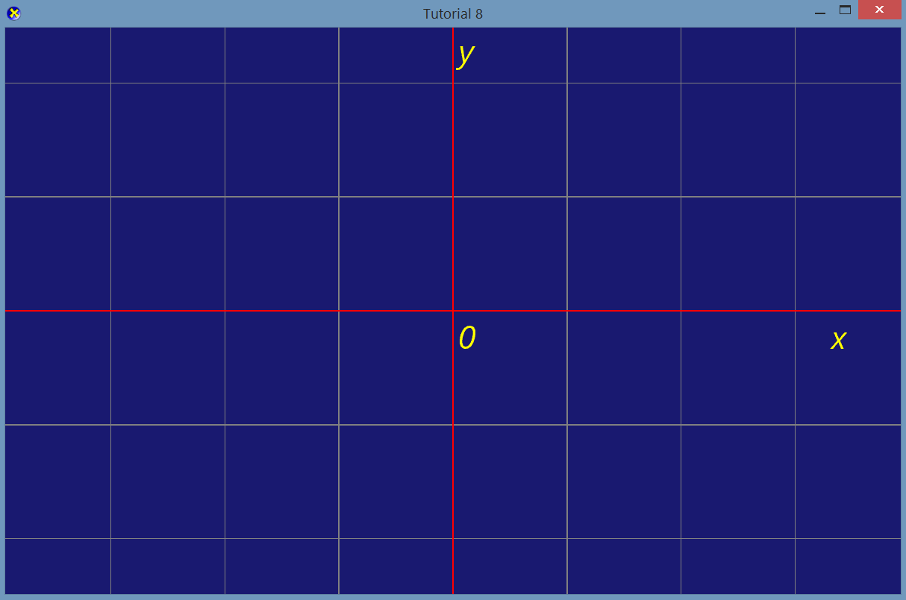
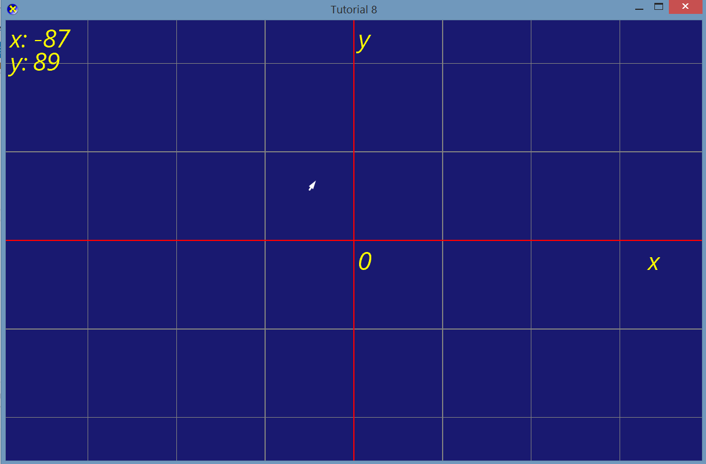

COMP 2501 - Winter 2014 Tutorial #8
DirectXTK and Debugging
Description:
The purpose of this tutorial is to familiarize yourself with DirectXTK and debugging.
To get credit for the tutorial you must complete, or make significant progress, on the problems provided and demonstrate your results to the tutorial TA.
If you cannot complete the tutorial in the time allotted you may demonstrate the completed results to the TA during their office hours.
This tutorial is based on and adapted version of the DirectXTK Simple Sample.
Instructions:
Overview
The DirectX Tool Kit (DirectXTK) is a collection of helper classes for writing Direct3D 11 C++ code. This tutorial will familiarize you with those tools and how you can use them to help you debug your game. Notice that our solution is now composed of two projects:
SimpleSample is the application we will be running, and DirectXTK_Desktop_2012 is the Desktop flavour of the DirectXTK Library. We don't execute this code directly, we simply reference it from SimpleSample.
NOTE: You can include DirectXTK in your own projects as well. All you need is a copy of the DirectXTK code, available from their website. Once you have it, all you need to do is place it in your source directory, and then reference it like we're doing in this project:
You don't need to include all of the headers listed above, just the ones that you're going to make use of. More on that later.
Run SimpleSample:
Our code doesn't do very much now, except display a blue screen. Let's change that.
Problem 1)
One thing that can make the development of games much easier is a frame of reference. Let's add that to our screen in the form of a grid.
The PrimitiveBatch library is a simple way to draw user primitives (such as lines or triangles) to the screen. It is simpler than using the Vertex and Index buffers, but not as efficient, so it is generally only used for debug rendering.
We've already configured and set up the variables needed to make use of this library. You'll notice a DrawGrid() method. This is what you'll need to complete. The function you'll want to make use of is the following:
g_Batch->DrawLine(VertexPositionColor(...), VertexPositionColor(...));
This function draws a line between two points, each specified by a VertexPositionColor. A VertexPositionColor is just a vertex that holds data for a position and a color, like we've done before. To create a VertexPositionColor, you can write something like the following:
XMFLOAT3 pos = XMFLOAT3(1.0f, 0.0f, 0.0f);
XMVECTORF32 col = Colors::Gray;
VertexPositionColor v = VertexPositionColor(XMLoadFloat3(&pos), col);
You'll need to make use of both for loops, and the already defined variables (numRows, numColumns, minX etc.) to draw the grid, or, if you think of a better way, you're welcome to implement it.
You should create something like the following:
Now you have a grid that you could use to position elements around the screen in an accurate way.
Problem 2)
Right now our grid is pretty plain. Let's improve it.
First, use your knowledge of drawing lines to draw red lines down the x and y axes, like this:
Next, we're going to label these axes. The SpriteFont class provides functionality for rendering text to the screen. It is similar to the SpriteFont class from XNA. It is used in the following way:
// Draw sprite
g_Sprites->Begin( SpriteSortMode_Deferred );
g_Font->DrawString( g_Sprites.get(), L"hello world", XMFLOAT2( 100, 10 ), Colors::Yellow );
g_Sprites->End();
The DrawString() method takes a reference to our spritebatch, a string to render, a position to render the string at (in pixels), and a color to apply to the text.
You will notice at the bottom of the Render() method, we have the first and last lines are already implemented:
// Draw sprite
g_Sprites->Begin( SpriteSortMode_Deferred );
g_Sprites->End();
Call the DrawString() method and add a yellow "0" to the origin of the grid.
The origin of the grid is located at the exact centre of the screen. The screen measures 1200 pixels X 768 pixels. In DirectXTK, things are drawn to the screen using a coordinate system that begins at the top left, like the following:

Using this information, place the "0" at the origin, like this:
Add an "x" and "y" label to each axis to finish up the grid:

Problem 3)
We're now going to add some text to tell us where our mouse cursor is.
To figure out where our mouse cursor is on your screen use:
POINT cursorPos;
GetCursorPos(&cursorPos);
This will give you the position of your cursor relative to your whole screen. You can access the x or y coordinates like this:
long xLong = cursorPos.x;
long yLong = cursorPos.y;
To constrain that to the game window use:
ScreenToClient(g_hWnd, &cursorPos);
You now have the position of your cursor relative to the game window. Use this to draw the coordinates in the upper left corner of the screen.
Note: You can convert the long returned from cursorPos.x or cursorPos.y to a wchar (to be used in DrawString()) by doing the following:
long xLong = cursorPos.x;
std::wostringstream woss;
woss << xLong;
const std::wstring& xString = woss.str();
g_Font->DrawString( g_Sprites.get(), xString.c_str(), XMFLOAT2( 0, 0 ), Colors::Yellow );
Draw the coordinates to the screen like this:
Problem 4)
Convert window-based coordinates from the previous problem into your own grid-based coordinates, so that x and y are both 0 when the cursor is at the origin of the coordinate system.
